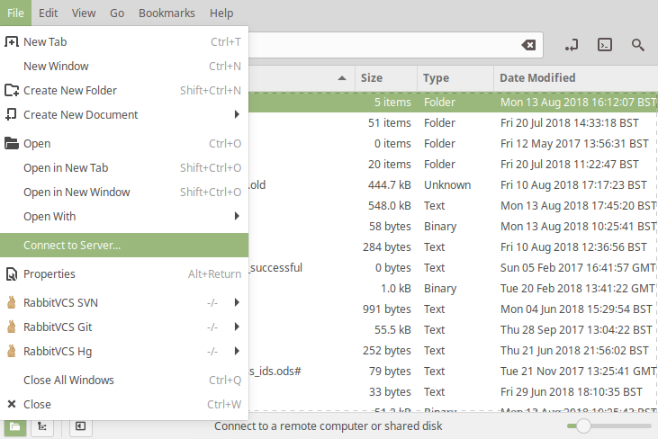
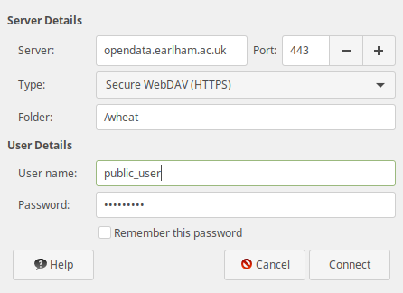
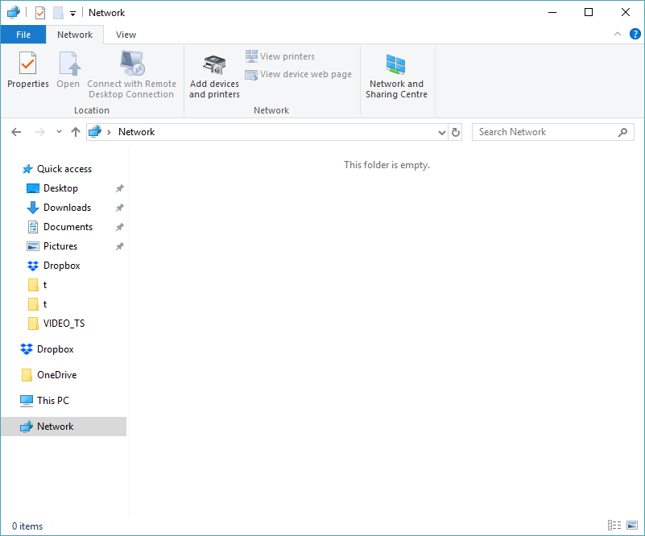
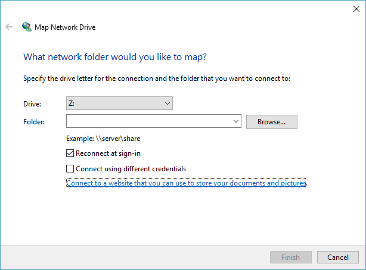
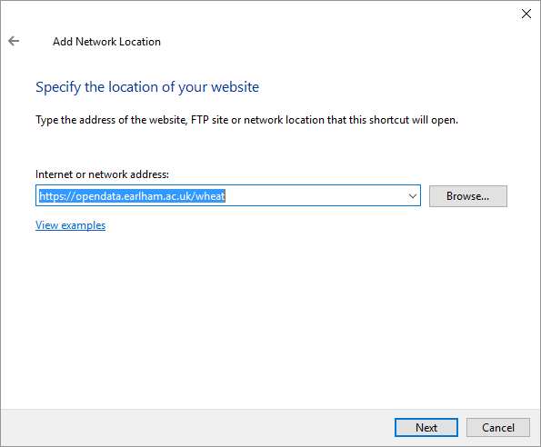
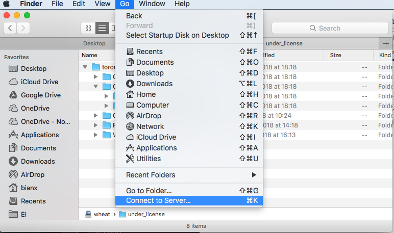
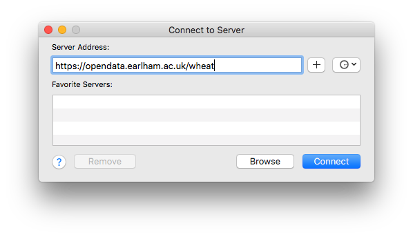
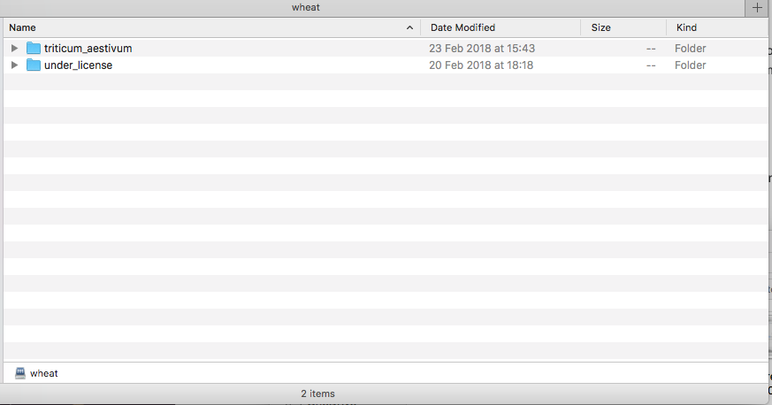

Part of the functionality of the DFW portal is that it can use the WebDAV protocol to allow it to be mounted as a read-only drive on your computer. Support for this may be available directly from your computer's operating system or you can use a third-party tool such as Cyberduck.
The required configuration details for this are:
There are a variety of ways to do this depending upon your operating system or tool and there are some guides below.
Open your file manager and go to the "File - Connect to Server..." menu option as shown in the picture below.
You will then be shown a window where you can enter the server details for the DFW Data Portal as described above giving you a window similar to the one below.
1. From the File Manager, right-click on the Network item in the left-hand pane.
2. This will open a window called "Map Network Drive" and a link called "Connect to a Web site that you can use to store your documents and pictures"
3. This will open the "Add Network Location" wizard and you should click on the Next button and then "Choose a custom network location" and click Next again.
4. In the "Internet or network address:" text box, enter "https://opendata.earlham.ac.uk/wheat" and click Next.
5. You can name the network location to anything you like such as "DFW Data Portal" and click Next and then Finish.
1. In the Finder app, click the menu option "Go" then "Connect to Server"
2. Then in the Server Address, enter https://opendata.earlham.ac.uk/wheat when prompted enter username: public_user, password: anonymous
3. Browse:
